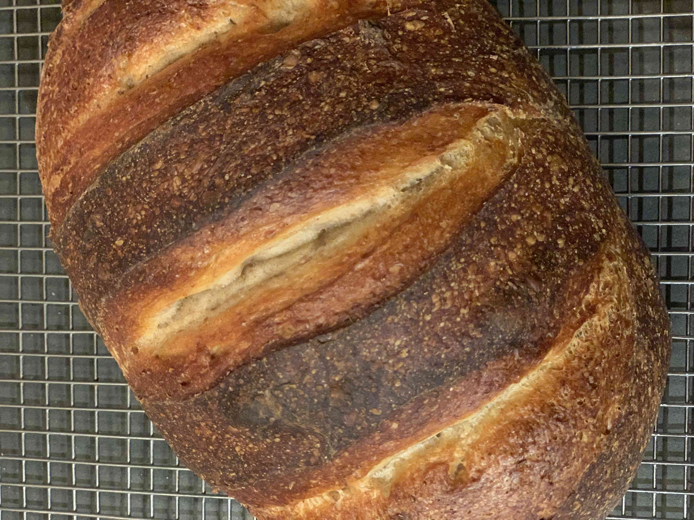

No knead sourdough
This entire recipe takes about 3 days, from start to finish. But very little active time. Since the middle of the pandemic, I’ve been baking this once a week. Other than baguettes, we rarely buy bread anymore. And this costs almost nothing.

- Sourdough starter
- Whole wheat flour
- All purpose flour
- Salt
- Enameled cast-iron Dutch oven (with a lid)
- Corn meal
Day 1 (8-12 hours start to finish, most inactive)
- Remove starter from fridge. Let sit for about 1 hour, to come to room temperature. (You don’t HAVE to let it sit, but I find it reduces the next resting step.)
- Feed the starter. Add 110g flour and 110g water. Stir vigorously. Cover. Place in a warm place until it at least doubles in volume, reaching the top of the jar. [Note: If the house is cool, I use the oven with the light on. It takes about 8 hours. On the counter takes 8 or so. If you leave it too long, it will either make a huge mess as it escapes the jar, or will consume all the flour you just added and start deflating.]
- Combine 220g fed/ripe starter with 600g flour, 400g water, and 18g salt in a large bowl. (I use a large, 500g stainless steel mixing bowl that has an air tight plastic lid.) Don’t forget the salt. I use 300/300 regular to whole wheat flour, but feel free to experiment. I found more WW to be too dry and crumbly. Mix well, cover, and let sit on the counter for an hour. You should have about 80-100g starter left. Put that back in the fridge. (If less, add equal parts flour and water until you do)
- Pick up one corner of the dough, pull it out and up, and fold it over the top of the dough. You can be aggressive, but you won’t be pulling so hard that your hand is much above the bowl. Work your way around the dough for about a minute. Recover. And let sit 1 hour.
- Repeat step 4 twice more. The dough should start too feel more uniform and less sticky as you go. After your third round, put the covered bowl in the fridge.
- Leave it in the fridge for at least 24 hours and up to 4 days. Longer seems to be better, but only marginally.
Day 3 (4 hours, about 30 minutes of active time)
- Remove dough from fridge. Let rest in the bowl for an hour.
- Cover a clean bit of counter with a dusting of flour. (I now just use the inverted plastic bowl lid, and don’t use any flour, to be less messy.) Turn dough onto counter and shape into a ball. Cover with a towel and let rise for 1-2 hours. Currently, for me, an hour is enough since the starter is quite active. It should look a bit bigger and may flatten out a bit. About 30 minutes before it’s done, place a covered Dutch oven in the bottom third of the oven and preheat to 425 degrees.
- Prepare to bake. Set up a place near the dough to put the hot Dutch oven and its lid. When the oven is done preheating, remove the Dutch oven, and close the oven door. Remove the lid and spread some corn meal on the bottom to keep the bread from sticking. Quickly make 1-3 slashes across the top of the bread with a sharp knife or a bread knife, and drop it into the Dutch oven, slashes up. Put the lid back on, and put it in the oven.
- Bake for 15 minutes and then remove the lid.
- Bake another 35 minutes. You’re looking for a nice brown top, and a hollow sound. Or if you have an instant thermometer, 209 degrees in the coldest part.
- Remove from oven, take the bread out of the Dutch oven, and cool on a rack.
Background for making a starter
Creating a starter
My starter lives in the fridge in a lidded 20oz glass jar. You could get some from a neighbour who bakes sourdough. I made it with bakers yeast from the Whole Foods Bakery (had no friends): ~20g yeast + 100g water + 100g flour. You could also use dry yeast in a packet, or nothing. But it will take more rounds of feeding to get vigorous enough. Basically, repeat steps 1 and 2 from Day 1 instructions a few times. That is: (1) Feed it 100g flour + 100g water, (2) stir vigorously, (3) let it rest for a while and see how long it takes to double in size. If it isn’t doubled after 12 hours, then remove about half. Throw the rest in the fridge for a few days. Repeat 2-3 times. What you’re looking for is for it to get to the point that it will double in size in 8 hours or less if left out. If it takes longer, then the starter isn’t yet ready for baking bread.
Maintaining the starter
It needs to be fed about once a week. Less frequently, it gets too slack to leaven bread on one feeding. So I try to bake once a week. Otherwise, just feed it by removing about 200g and replacing with 100g each flour and water. It will likely be fine up to two weeks. Any longer, you’ll need to do the feeding process a few times. If you forget it for a month, it might start to look gross. It’s probably fine and can be rescued, but you may not want to.